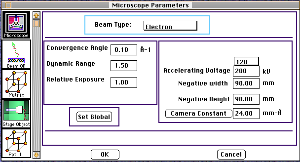

Distributed By: Virtual Labs
Set All Paramters Dialog Box
PATH:Parameter Menu:Set All Parameters:
The Total Definition Dialog Box or the Set All Parameters Dialog Box has
been designed to facilitate setting up a calculation. With the advent of
support for dynamic calculations, the number of potential parameters which
need to be accurately set before a calculation will mimic an experimental
situation has increased dramatically. To aid and guide the input, the Set
All Parameters Dialog Box allows access to all parameters critical to the
given calculation. Thus, for each object, only the parameters which could
potentially effect the calculation are made available in that object's Set
All Parameter Dialog Box.
For example, SAD calculations are effected by the Beam type but elastic
constants have no effect on the calculation. Thus, the Beam
Type Dialog Box is available in the Set All Parameters Dialog Box but
the Elastic Constants Dialog Boxes
are not available thru the Set All Parameters Dialog Box in the SAD Object.

To use the Set All Parameters Dialog Box, access it through the Parameters
Menu and then go through the various dialog boxes by clicking on the Icon
List on the lefthand side of the dialog. Clicking on a new Icon causes the
righthand side of the dialog to be reformatted with the new dialog box menus,
buttons, check boxes and text entry boxes. Use the scroll bar to access
additional Icons.
Note: Moving from one Icon to the Next automatically saves the data.
Note: Clicking the OK or Cancel buttons works as expected
for the current Dialog Box values showing but the Cancel button does
not effect previously seen Dialogs.
IMPORTANT: When in the Stage
Control Box,DO NOT LEAVE !!! if the Set-up check box is activated!!!
Author: J.ames T.
Stanley
 Desktop
Manual:Dialog Boxes
Desktop
Manual:Dialog Boxes
Distributed By: Virtual Labs
Last Updated: 6/6/96